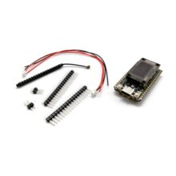

Отладочная плата LoRa32-Heltec V4 ESP32-S3R2 16МБ, LoRa 868 МГц (Meshtastic)
МикроконтроллерыКатегория
Микроконтроллеры
Модель
Heltec WiFi LoRa 32 V4
Микроконтроллер
ESP32-S3R2
LoRa-чип
SX1262
Диапазон LoRa
863–928 МГц
Максимальная мощность передатчика
28 ±1 dBm
Оперативная память
2 МБ PSRAM
Флеш-память
16 МБ
Беспроводные интерфейсы
Wi‑Fi 802.11 b/g/n, Bluetooth LE 5, Bluetooth Mesh
Питание аккумулятора
3.3–4.4 В Li‑ion
Габариты
51.7 × 25.4 × 10.7 мм
Кратко
Это отладочная плата Heltec WiFi LoRa 32 V4 на базе ESP32-S3R2 и LoRa-чипа SX1262. Используется для проектов Meshtastic, LoRaWAN и других IoT-узлов с Wi‑Fi/BLE и дальнобойной радиосвязью.
Описание
Плата относится к семейству Heltec WiFi LoRa 32 V4; по официальной документации она построена на ESP32-S3R2 и SX1262 и поддерживает Wi‑Fi, BLE и LoRa. Версия V4 отличается от V3 внешней флеш-памятью 16 МБ, наличием 2 МБ PSRAM, улучшенной RF-частью и поддержкой солнечного питания. У платы есть OLED-дисплей, USB‑C, разъёмы для Li‑Po аккумулятора, солнечной панели и GNSS-модуля, а также антенные разъёмы IPEX. Для Meshtastic и LoRaWAN она позиционируется как готовая IoT-плата для дальних беспроводных узлов и датчиков.
Документация
id hw-2026-138